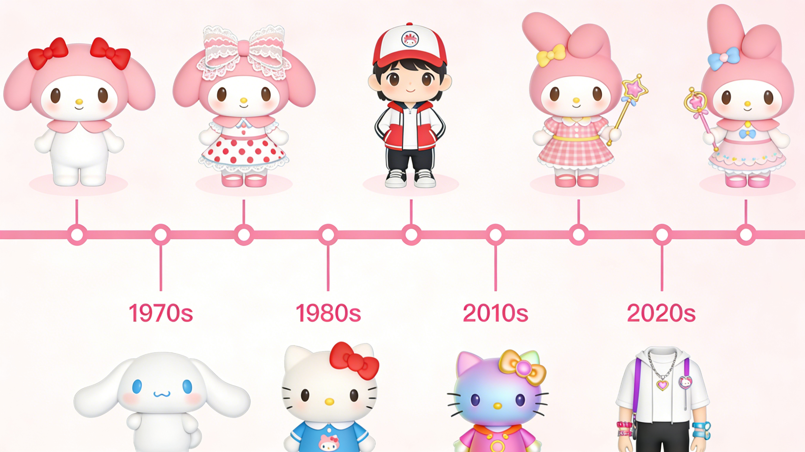
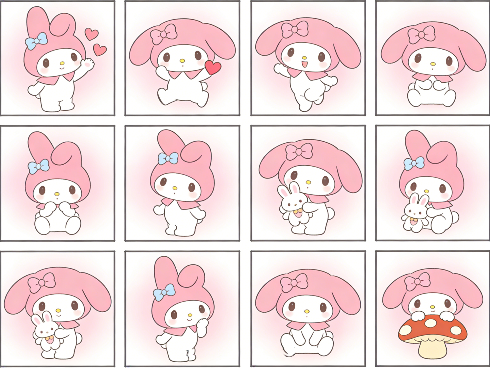

My Melody is a beloved character created by Sanrio in 1975. She is a cute white rabbit who wears a hood that covers her ears. My Melody is known for her kind heart and gentle personality.
This website will take you to explore My Melody's world, learn about her history, culture, and discover wonderful products featuring this adorable character.
Piano is My Melody's adorable younger sister — a sweet little sheep who wears a red hood. Despite her gentle appearance, Piano has a curious and playful spirit.
She often helps My Melody in the kitchen and loves to explore Marigold Garden together with her big sister. Piano's innocence and charm make her a beloved member of the Sanrio family.

Learn about My Melody's development history from 1975 to the present
Learn More
Appreciate My Melody's beautiful pictures and collectibles
Learn More